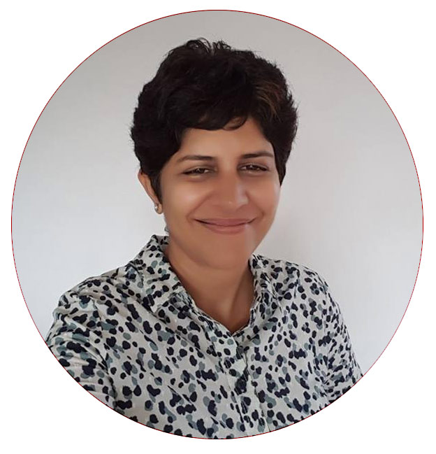

Aaj Tak
Deputy Editor & Business Head
Zee News
Special Correspondent
India Today
Deputy Editor, TV Today
Hello there, nice to meet you — I am
News Anchor & Journalist
A pioneering voice in Hindi journalism, known for commanding presence and incisive reporting. From business desk at Aaj Tak to the floors of the Geneva Motor Show — a career that defined an era of Hindi news.
Get In TouchCareer Highlights
Aaj Tak
Deputy Editor
Zee News
Spl. Correspondent
India Today
Deputy Editor

“Hardly any knowledgeable journalist is unaware of Sonia Singh, who has made an incomparable contribution to the Hindi journalism world.”
Sonia Singh is a well-known name in Indian electronic media — a journalist who rose through the ranks to become one of the most respected anchors and reporters in Hindi news. Originally from Delhi, she pursued English Honours before completing her MBA from Delhi University, building the analytical foundation that would define her journalistic voice.
What set Sonia apart was her rare ability to excel in front of the camera and in the field simultaneously. She gained fame not only through anchoring but through rigorous reporting — honing her craft at a pace that few in the industry could match. When she left the TV news industry in 2012, she was serving as Deputy Editor at Aaj Tak, also heading the channel's business desk.
Her expertise in the automobile sector established a unique identity for her — an area rarely championed by anchors in Hindi news. She was as composed in her personal life as she was on air, and she continues to inspire students pursuing careers in journalism to this day.
Early Career
Special Correspondent
Sonia began her electronic media career at Zee News as a Special Correspondent. It was here that she developed the reporting instincts and on-ground experience that would carry her to the top of Hindi journalism. Her ability to break complex stories with clarity quickly distinguished her among peers.
Rising Through the Ranks
Deputy Editor
At TV Today (part of the India Today Group), Sonia took on an editorial leadership role as Deputy Editor. She sharpened her editorial judgment and deepened her understanding of the Indian news landscape, overseeing coverage across key beats and contributing to the channel's journalistic standards.
2012 — Peak Career
Deputy Editor & Business Desk Head
Sonia's longest and most celebrated chapter was at Aaj Tak, where she served as Deputy Editor and led the channel's Business Desk. She launched and anchored Chakke Pe Chakka — an automobile show that became immensely popular and pioneering in Hindi news television. She also represented Aaj Tak at the Seoul Motor Show, Paris Motor Show, and Geneva Motor Show, bringing international automotive journalism to Hindi audiences for the first time at scale. She left in 2012 at the peak of her career.
Signature Show · Aaj Tak
Sonia's flagship automobile show on Aaj Tak became a landmark in Hindi news TV. A rare blend of expert reporting and accessible storytelling, it brought car and auto industry news to mainstream Hindi audiences — and established Sonia as the definitive automobile voice in the space.
International Reporting
Sonia covered the Seoul Motor Show, Paris Motor Show, and Geneva Motor Show for Aaj Tak — bringing international automotive events to Hindi viewers with depth and context. This cross-border journalism marked a first for the Hindi news genre.
Editorial Leadership
As head of Aaj Tak's Business Desk, Sonia steered the channel's economic and markets coverage. Translating complex financial stories for a mass Hindi audience required both journalistic rigour and editorial vision — skills she mastered over her career.
Field Reporting
Beyond the anchor desk, Sonia was equally at home in the field — covering major news events across India and abroad. Her dual strength as anchor and reporter is rare in the industry, and it earned her the respect of colleagues and viewers alike.
Main Roles
Aaj Tak
Deputy Editor & Business Head
Zee News
Special Correspondent
India Today
Deputy Editor, TV Today
Freelance Experience
For journalism inquiries, speaking engagements, collaborations, or to learn more about Sonia's work — reach out below.
Send a Message